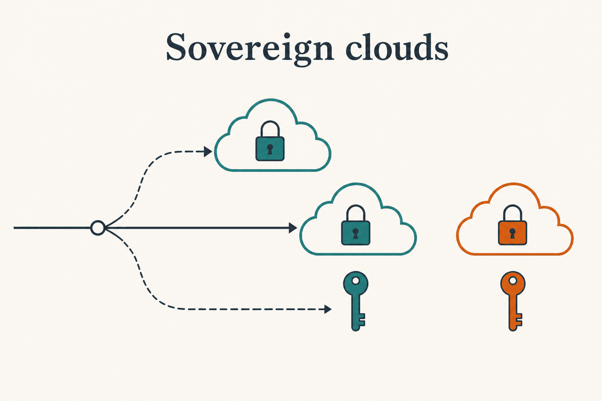
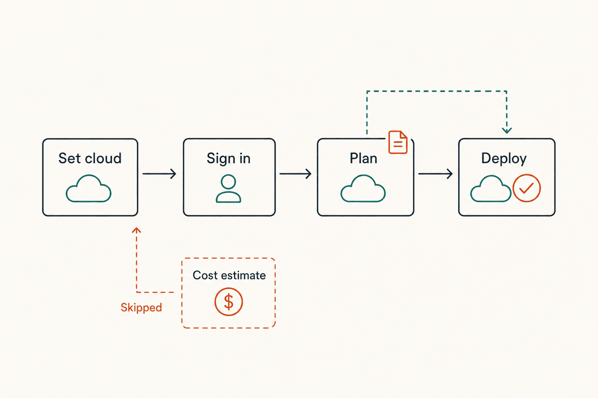

Plan: Sovereign cloud support (azure_environment)

Purpose
Make plan and deploy work against Azure US Government and Azure China, from GitHub Actions with OpenID Connect and from Azure DevOps with a service connection, without changing anything for existing public-cloud users. The design is in docs/adr/0003-sovereign-clouds.md.
Problem
Today the sign-in assumes the public cloud. scripts/az-login.sh:77 asks GitHub for a token with the audience api://AzureADTokenExchange, and az login runs with no az cloud set first. The plan records the Bicep version and the stack settings so that the deploy matches the plan, but not the cloud. Two steps need public-cloud services: the cost estimate (scripts/azure-cost.sh, public retail prices) and, for some users, Bicep module restore from mcr.microsoft.com.
The issue also asks for a review of hard-coded endpoints. That review is done: there is no portal link, management.azure.com or login.microsoftonline.com anywhere in scripts/, .github/, .azuredevops/ or docs/, and the PR comment contains no Azure links. The acceptance item "links in the PR comment point at the right portal" therefore has nothing to act on today. See Questionables.
Solution
One setting, azure_environment / AZURE_ENVIRONMENT (AzureCloud, AzureUSGovernment, AzureChinaCloud), and one new sourced script, scripts/azure-cloud.sh. On GitHub it runs az cloud set and picks the token audience before sign-in. On Azure DevOps it only checks that the connection's cloud matches the variable when the variable is set. The plan records the active cloud as the azure_environment output; the deploy compares it with plan_azure_environment / PLAN_AZURE_ENVIRONMENT and refuses to run on a mismatch. The cost estimate is skipped with a message outside the public cloud.

Relevant Files
Existing Files
- existing
scripts/az-login.sh— GitHub sign-in. Line 77 holds the fixed audience; lines 66-99 buildaz loginwith noaz cloud set. - existing
scripts/az-deploy.sh— runs validate, what-if and create. Lines 254-285 select the Bicep version and the subscription; lines 304-325 holdcheck_plan_settings, the pattern to follow for the cloud. - existing
scripts/azure-cost.sh— ACE cost estimate.fail(from line 49) andreport_only(from line 22) decide report-only versus failing; the download starts at line 161. - existing
scripts/pr-comment.sh— builds the comment header (lines 44-60); precedent for an optional line is theVERSION_BICEP_CLIblock. - existing
scripts/debug-info.sh— lists settings (lines 68-75); the env filter at line 196 already passesAZURE_*. - existing
scripts/azure-subscription.sh,scripts/bicep-version.sh— sourced helpers; the style to copy. The subscription error text matches "doesn't exist in cloud" for any cloud, so it needs no change. - existing
.github/actions/plan/action.yml— inputs (lines 10-116), outputs (117-129), Azure login step (150-162), Cost estimate step (287-305), debug step (357-385). - existing
.github/actions/deploy/action.yml— inputs, Azure login step (133-145), Create deployment step (175-197), debug step. - existing
.azuredevops/templates/plan-stage.yml—SCRIPTSlist (lines 78-91), what_if step namedwhat_if(156-166), debug env (231-257). - existing
.azuredevops/templates/deploy-stage.yml—SCRIPTSlist, deploy job variables (lines 70-74). - existing
.azuredevops/ms.azure.deploy.yml— the single-file pipeline: variables (lines 12-60), planSCRIPTSlist (line 78 onwards), deploy variables (lines 291-295), deploySCRIPTSlist. - existing
docs/configuration.md,docs/how-it-works.md,docs/setup-github.md,docs/setup-azure-devops.md,docs/troubleshooting.md,docs/examples/github/*.yml,docs/examples/azure-devops/*.yml,README.md,.azuredevops/README.md— documentation and examples.
New Files
- new
scripts/azure-cloud.sh— sourced helper:cloud_name,cloud_audience,select_cloud,check_plan_cloud,cloud_is_public. - new
docs/adr/0003-sovereign-clouds.md— the ADR (already written). - new
docs/examples/github/sovereign-us-government.yml— a workflow example for Azure US Government.
Implementation Phases
IMPORTANT: Execute every phase and task step by step, in order, top to bottom.
Status markers: [] idle · [wip] in progress · [x] complete · [f] failed. All start as [].
[] Phase 1: The cloud helper, scripts/azure-cloud.sh
One sourced script so GitHub and Azure DevOps share the logic. It follows the style of azure-subscription.sh: functions, an error variable, no exit inside functions. It must work with bash 4+ (no ${var,,}, so it also lints clean on older shells).
1. Write the script
[]Createscripts/azure-cloud.shwith the licence header used by the other scripts, executable (chmod +x), and# shellcheck disable=SC2034forCLOUD_SELECTEDandCLOUD_ERROR, which the caller reads.[]cloud_name VALUE: print the canonical name, or print nothing for an empty value or an unset Azure DevOps variable (the literal$(NAME), asazure-cost.shalready handles forIN_CURRENCY). Return 1 for any other value.[]cloud_audience NAME: print the OIDC audience for the canonical name.[]active_cloud:az cloud show --query name -o tsv, empty on error.[]select_cloud(GitHub sign-in): validate, thenaz cloud set --namewhen the active cloud differs. SetsCLOUD_SELECTED.[]verify_cloud(any later step): whenAZURE_ENVIRONMENTis set, fail if it differs from the active cloud. Never changes the cloud. This is the Azure DevOps check, where the task has already signed in.[]check_plan_cloud: record or compare the cloud (see Phase 3).[]cloud_is_public: true when the active cloud isAzureCloud.
cloud_name() {
local v="${1-}"
if [[ "${v}" == *'$('* ]] || test -z "${v//[[:space:]]/}"; then return 0; fi
case "$(printf '%s' "${v}" | tr '[:upper:]' '[:lower:]')" in
azurecloud) echo 'AzureCloud';;
azureusgovernment) echo 'AzureUSGovernment';;
azurechinacloud) echo 'AzureChinaCloud';;
*) return 1;;
esac
}
cloud_audience() {
case "${1}" in
AzureUSGovernment) echo 'api://AzureADTokenExchangeUSGov';;
AzureChinaCloud) echo 'api://AzureADTokenExchangeChina';;
*) echo 'api://AzureADTokenExchange';;
esac
}
select_cloud() {
local want
CLOUD_ERROR=''
if ! want=$(cloud_name "${AZURE_ENVIRONMENT-}"); then
CLOUD_ERROR="Unsupported azure_environment '${AZURE_ENVIRONMENT}'. Use AzureCloud, AzureUSGovernment or AzureChinaCloud."
return 1
fi
CLOUD_SELECTED="${want:-AzureCloud}"
if [ "$(active_cloud)" != "${CLOUD_SELECTED}" ] && \
! az cloud set --name "${CLOUD_SELECTED}" >/dev/null 2>&1; then
CLOUD_ERROR="Unable to select the Azure cloud ${CLOUD_SELECTED} (az cloud set failed)."
return 1
fi
}AzureCloud and the CLI already on AzureCloud, select_cloud runs no az cloud set at all, and the audience is the current one.2. Testing Strategy
The functions are tested without a sovereign tenant by putting a fake az first on PATH. The shim answers cloud show from a state file and records cloud set. Cases: each of the three names, mixed case, empty, $(AZURE_ENVIRONMENT), an invalid value, and an az cloud set that fails.
[]shellcheck -x scripts/azure-cloud.sh— no findings.[]bash tests/azure-cloud.sh(new file, plain bash withassert_eq; shim in a temp dir) — all cases pass, including "default makes noaz cloud setcall".[]bash -n scripts/azure-cloud.sh— it parses.
[] Phase 2: GitHub sign-in and the new inputs
Select the cloud before az login and request the token with the cloud's audience. Add the inputs to both composite actions.
1. scripts/az-login.sh
[]After thelog_severitycase (ends at line 65) and beforecmd="az login ..."(line 66), sourceazure-cloud.shand callselect_cloud. On failure print the error with the same::error::/##[error]pattern, calllog_output "${log}" "${CLOUD_ERROR}" ''andexit 1.[]Replace line 77--data-urlencode "audience=api://AzureADTokenExchange"with--data-urlencode "audience=$(cloud_audience "${CLOUD_SELECTED}")". The audience is not a secret, so it may be echoed. Keepecho "::add-mask::${token}"and theshownvariable untouched: the token and the secret stay masked.[]Addecho "Azure cloud: ${CLOUD_SELECTED}"beforeaz loginso the log states the cloud (it also goes to the log file for the logs artifact; no secret is involved).
# az-login.sh, after the log_severity case
# shellcheck source=azure-cloud.sh
source "$(dirname "${BASH_SOURCE[0]}")/azure-cloud.sh"
if ! select_cloud; then
if test -n "${TF_BUILD-}"; then echo "##[error]${CLOUD_ERROR}"; else echo "::error::${CLOUD_ERROR}"; fi
log_output "${log}" "${CLOUD_ERROR}" ''
exit 1
fi
echo "Azure cloud: ${CLOUD_SELECTED}"2. .github/actions/plan/action.yml and .github/actions/deploy/action.yml
[]Add inputazure_environment(required false, default"AzureCloud") afterazure_client_secret, with a description that names the three values and says it must match in both actions.[]In the "Azure login" step of both files addAZURE_ENVIRONMENT: ${{ inputs.azure_environment }}toenv:.[]AddIN_AZURE_ENVIRONMENT: ${{ inputs.azure_environment }}to the "Show debug info" stepenv:in both files, next toIN_CURRENCY.[]Add the optional line inpr-comment.sh(Phase 4) by passingAZURE_ENVIRONMENT: ${{ inputs.azure_environment }}in the "Add comment" stepenv:of both files.
3. Testing Strategy
Static checks plus a dry run of the sign-in script against a shim for az and curl, to prove the audience that is requested. A real sovereign sign-in is Phase 6.
[]shellcheck -x scripts/az-login.sh— no new findings.[]actionlint .github/actions/*/action.ymlif installed (not on this machine; otherwisepython3 -c "import yaml,sys;[yaml.safe_load(open(f)) for f in sys.argv[1:]]" .github/actions/*/action.yml) — the YAML parses.[]Runscripts/az-login.shwithAZURE_ENVIRONMENT=AzureUSGovernment, no client secret, and shims forcurl(log its--data-urlencodearguments and write a fake token response) andaz(log arguments). Expectaudience=api://AzureADTokenExchangeUSGovandaz cloud set --name AzureUSGovernmentbeforeaz login. Repeat forAzureChinaCloud.[]Same run with the variable empty — expectaudience=api://AzureADTokenExchangeand noaz cloud set: default unchanged.[]grep -rn "AzureADTokenExchange" scripts .github— the only match is inazure-cloud.sh.
[] Phase 3: Record the cloud in the plan, check it at deploy (both platforms)
This extends "deploy exactly what was planned". The pattern is check_plan_settings in scripts/az-deploy.sh:304-325: the what-if writes an output, create compares it with the value passed in.
1. scripts/azure-cloud.sh: check_plan_cloud
[]Implement it to readSCRIPT_ACTION(set byaz-deploy.sh).validate: callverify_cloudonly.what-if: callverify_cloud, then write the active cloud asazure_environment(Azure DevOps:##vso[task.setvariable variable=azure_environment;isOutput=true]; GitHub:echo "azure_environment=..." >> "${GITHUB_OUTPUT:-/dev/null}", the same two linescheck_plan_settingsuses).create: compare withPLAN_AZURE_ENVIRONMENT.
check_plan_cloud() {
local current planned
CLOUD_ERROR=''
current=$(active_cloud)
verify_cloud || return 1
case "${SCRIPT_ACTION}" in
what-if)
if test -n "${TF_BUILD-}"; then
echo "##vso[task.setvariable variable=azure_environment;isOutput=true]${current}"
else
echo "azure_environment=${current}" >> "${GITHUB_OUTPUT:-/dev/null}"
fi;;
create)
planned="${PLAN_AZURE_ENVIRONMENT-}"
if [[ "${planned}" == *'$('* ]]; then planned=''; fi # unset in Azure DevOps
if test -n "${planned}" && [ "${planned}" != "${current}" ]; then
CLOUD_ERROR="The deployment signed in to ${current}, but the plan used ${planned}. Run the plan again with the cloud you deploy to."
return 1
elif test -z "${planned}" && [ "${current}" != 'AzureCloud' ]; then
CLOUD_ERROR="A deployment to ${current} needs the cloud the plan used (the plan's azure_environment output). Pass it to the deployment (plan_azure_environment)."
return 1
fi;;
esac
}2. scripts/az-deploy.sh
[]Sourceazure-cloud.shand callcheck_plan_cloudimmediately before the "Select the subscription" block (around line 270, after the Bicep selection at 254-268). On failure, print the error, writeprintf '%s\n' "## Azure cloud" "" "${CLOUD_ERROR}❗" > "${log/.log/.md}"andexit 1, exactly like the Bicep and subscription failures next to it.
3. GitHub plumbing
[]plan/action.ymloutputs: addazure_environmentwithvalue: ${{ steps.what_if.outputs.azure_environment }}and a description that says to pass it to the deploy action.[]deploy/action.ymlinputs: addplan_azure_environment(default empty), and in the "Create deployment" stepenv:addPLAN_AZURE_ENVIRONMENT: ${{ inputs.plan_azure_environment }}besidePLAN_STACK_SETTINGS.[]In the "Validate" and "What-if" steps of the plan action addAZURE_ENVIRONMENT: ${{ inputs.azure_environment }}soverify_cloudcan compare; same in the deploy "Create deployment" step.
4. Azure DevOps plumbing (templates and the single-file pipeline)
[].azuredevops/templates/plan-stage.yml: add"azure-cloud"to theSCRIPTSlist (lines 78-91). Without itaz-deploy.shfails onsource, because each script is downloaded by name. AddAZURE_ENVIRONMENT: $(AZURE_ENVIRONMENT)to the Debug information stepenv:(lines 231-257). The what-if step already hasname: what_if, so the output is addressable.[].azuredevops/templates/deploy-stage.yml: add"azure-cloud"to itsSCRIPTSlist and, in the deploy jobvariables:(lines 70-74),PLAN_AZURE_ENVIRONMENT: $[ stageDependencies.${{ parameters.planStageName }}.${{ parameters.planJobName }}.outputs['what_if.azure_environment'] ].[].azuredevops/ms.azure.deploy.yml: add"azure-cloud"to bothSCRIPTSarrays (plan job and deploy job), a commented variable# - name: AZURE_ENVIRONMENTwith the three values in the comment (next toENVIRONMENT; do not enable it, the connection decides), andPLAN_AZURE_ENVIRONMENT: $[ stageDependencies.Plan.plan.outputs['what_if.azure_environment'] ]in the Deploy job variables (lines 291-295).[]Do not add anyaz cloud setto Azure DevOps.AzureCLI@2already selected the cloud of the service connection; changing it after sign-in would break the session.
5. Testing Strategy
Extend tests/azure-cloud.sh with a table for check_plan_cloud and run the real az-deploy.sh only as far as the check, using the shim.
[]bash tests/azure-cloud.sh— table: (what-if, active X) writesazure_environment=Xto a tempGITHUB_OUTPUTand to stdout as##vsowhenTF_BUILD=1; (create, planned = current) passes; (create, planned differs) fails with the "run the plan again" text; (create, planned empty, AzureCloud) passes; (create, planned empty, AzureUSGovernment) fails; (create, planned$(x), AzureCloud) passes; (any,AZURE_ENVIRONMENTset and differs from active) fails.[]shellcheck -x scripts/az-deploy.sh scripts/azure-cloud.sh— no new findings againstgit stash-ed baseline (git stash; shellcheck -x scripts/az-deploy.sh > /tmp/base.txt; git stash pop, then diff).[]python3 -c "import yaml,sys;[yaml.safe_load(open(f)) for f in sys.argv[1:]]" .azuredevops/*.yml .azuredevops/templates/*.yml .github/actions/*/action.yml— YAML parses. Azure DevOps expression syntax is not checked by it; confirm in Phase 6.[]grep -c azure-cloud .azuredevops/templates/*.yml .azuredevops/ms.azure.deploy.yml— plan-stage 1, deploy-stage 1, single-file 2.
[] Phase 4: Skip public-cloud-only steps, show the cloud in the comment
The cost estimate cannot price a sovereign cloud. Skip it with a message, but never skip a check the user asked for.
1. scripts/azure-cost.sh
[]Sourceazure-cloud.shnear the top. After the template existence check (line 158-160) and before the download (line 161), skip whencloud_is_publicis false.[]Report-only (no numeric threshold):notice warning "Cost estimate skipped: ...", write the "## Cost estimate" section to${log/.log/.md}so the PR comment shows it, andexit 0. The ERR trap is set, so use explicitexit 0.[]With a numeric threshold (! report_only): callfailwith a message that names the cloud and says to clearcost_threshold. A threshold that is silently not checked would let a plan through that the user wanted blocked.[]Leave the GitHub step condition and the Azure DevOps condition as they are: the step runs and explains itself, which is better than a silent gap.
if ! cloud_is_public; then
cloud=$(active_cloud)
msg="The cost estimate is skipped: it prices against the public Azure retail price list, which does not apply to ${cloud}."
if ! report_only; then
fail "${msg} A cost threshold is set, so the plan cannot check it. Clear cost_threshold (or set -1) for ${cloud}."
fi
notice warning "${msg}"
printf '%s\n' '## Cost estimate' '' "${msg}" > "${log/.log/.md}"
exit 0
fi2. scripts/pr-comment.sh
[]Next to theVERSION_BICEP_CLIblock (line 49-51) add: whenAZURE_ENVIRONMENTis set, not an unexpanded$(literal, and notAzureCloud, append"Azure environment ${AZURE_ENVIRONMENT}\n\n"tosummary. Default comments stay identical.[]Do not add portal links: there are none today. Record the idea (az cloud show --query endpoints.portal -o tsv) in Notes only.
3. scripts/debug-info.sh
[]Addecho "Azure Environment: ${IN_AZURE_ENVIRONMENT:-${AZURE_ENVIRONMENT:-N/A}}"after the Location line (line 71). The filter at line 196 already allowsAZURE_*andIN_*; the name contains none of the blocked words.
4. Not changed, on purpose
[]PSRule (psrule-*.sh, themicrosoft/ps-rulestep): runs offline on the compiled template. Kept. If the Phase 6 run shows a cloud-specific failure, add a skip then, not now.[]br/public:module restore and the Bicep CLI download: network access tomcr.microsoft.comand GitHub, not a cloud feature. Document it; add no code.[]bicep-snapshot.sh: passes--tenant-idand--subscription-idtobicep snapshot. Whether that command resolves existing resources against the public endpoint is unknown. Test it in Phase 6 and decide there (see Questionables).
5. Testing Strategy
[]shellcheck -x scripts/azure-cost.sh scripts/pr-comment.sh scripts/debug-info.sh— no new findings.[]Runazure-cost.shwith theazshim answeringAzureUSGovernment, a dummyTEMPLATE_FILE,LOG_PATH,LOG_NAME=cost_estimate,LOG_ORDER=a2and noTHRESHOLD: expect exit 0, a warning line, nocurlcall, andstep_a2_cost_estimate.mdholding the skip text.[]Same withTHRESHOLD=100: expect a non-zero exit and the "Clear cost_threshold" message in the.md.[]Same with the shim answeringAzureCloud: the script proceeds to the download (stop it with a failingcurlshim) — default path unchanged.[]Runpr-comment.shwithCOMMENTS_URLpointing at a localnc -lor acurlshim; withAZURE_ENVIRONMENT=AzureUSGovernmentthe body has the extra line, with it unset orAzureCloudthe body equals the output of the unmodified script (diffagainstgit stashoutput).
[] Phase 5: Documentation and examples
Write for a reader who runs Azure US Government or China for the first time. Plain sentences, the exact values, no promises that were not tested.
1. Documents
[]docs/configuration.md: add the rowsAzure environment | azure_environment | AZURE_ENVIRONMENT | P D | AzureCloud(GitHub input and Azure DevOps variable) andPlan Azure environment | plan_azure_environment | automatic | D | emptyto the table at lines 26-68. Add a section under "Azure connection": values, that GitHub runsaz cloud setand picks the audience, that on Azure DevOps the service connection decides and the variable is only a check, and the table of audiences. Addazure_environmentto the Outputs table (lines 256-262) and to the "Azure DevOps only" paragraph (line 254). In "Cost estimate" (line 185) add that the estimate is skipped outsideAzureCloud, and that a numericcost_thresholdthen fails the plan.[]docs/how-it-works.mdlines 100-104: add a bullet "The same cloud. The plan records the Azure cloud it signed in to (azure_environmentoutput). A deployment to another cloud fails."[]docs/setup-github.mdstep 2: add a "Sovereign clouds" paragraph. The federated credential's audience must be the one for the cloud, the issuer stayshttps://token.actions.githubusercontent.com, and the application lives in a tenant of that cloud. Name the Entra admin centre of that cloud only by saying "the Microsoft Entra admin centre of that cloud".[]docs/setup-azure-devops.mdstep 2: say the service connection must be created with the environment of the target cloud (Azure US Government or Azure China in the connection dialog), and thatAZURE_ENVIRONMENTis optional and only turns a mismatch into a clear error.[]docs/troubleshooting.md: rows for "Unsupported azure_environment", "The deployment signed in to X, but the plan used Y", "A deployment to X needs the cloud the plan used", "AADSTS70021 / AADSTS700212 with a sovereign cloud: the audience on the federated credential does not match", and "The cost estimate is skipped".[]README.mdand.azuredevops/README.md: one line each. Add a "Network" note: runners need access to GitHub (Bicep CLI, ACE) and, forbr/public:modules, tomcr.microsoft.com; a private registry in a sovereign cloud needscloud.currentProfileinbicepconfig.json.
2. Examples
[]Newdocs/examples/github/sovereign-us-government.yml, a copy ofminimal.ymlwithazure_environment: AzureUSGovernmentin the workflowenv:block, passed to both actions,plan_azure_environment: ${{ needs.plan.outputs.azure_environment }}in the deploy job, andazure_environment: ${{ steps.plan.outputs.azure_environment }}in the plan job outputs.locationis a US Gov region name such asusgovvirginia.[]Add theazure_environmentjob output andplan_azure_environmentinput to the other four GitHub examples (minimal,recommended,multi-environment,auto-approve-safe-plans) next tostack_settings, so a copy of any example is correct for a sovereign cloud by changing one value. Their default staysAzureCloud(or is omitted).[]docs/examples/README.md: list the new example.[]docs/examples/azure-devops/*.yml: add a commentedAZURE_ENVIRONMENTvariable with the three values.
3. Testing Strategy
[]grep -rn "azure_environment\|AZURE_ENVIRONMENT" docs README.md .azuredevops/README.md | wc -l— every file in the list above has at least one hit.[]python3 -c "import yaml,sys;[yaml.safe_load(open(f)) for f in sys.argv[1:]]" docs/examples/github/*.yml docs/examples/azure-devops/*.yml— examples parse.[]grep -rniE "contoso|fabrikam|acme|customer" docs/adr docs/examples specs/0003-sovereign-clouds.html— no customer names (public repository). Placeholder GUIDs only.[]Check every relative link added:grep -o "](\./[^)]*)" docs/*.mdand confirm each target exists.
[] Phase 6: Prove it against a real sovereign cloud, and release notes
The unit tests use shims. The acceptance criteria need a real run. This phase needs an Azure US Government test subscription; Azure China is run only if one is available, and its result is stated either way.
1. Live checks
[]Create an application in the US Government tenant, a federated credential with audienceapi://AzureADTokenExchangeUSGov(pull request) and another for the environment, and a Reader/Contributor assignment on a test resource group. Record the exact audience the portal offers; it settles the first Questionable.[]GitHub: rundocs/examples/github/sovereign-us-government.ymlon a pull request. Expect: sign-in succeeds, the log saysAzure cloud: AzureUSGovernment, the plan comment has the "Azure environment" line, the cost section says skipped, validate and what-if succeed. Approve the environment and expect a successful deployment.[]GitHub negative: pass a wrongplan_azure_environment(AzureCloud) to the deploy: expect the deploy to fail with the "plan used" message before anything is deployed. Omit it: expect the "needs the cloud the plan used" failure.[]Azure DevOps: a service connection to the US Government environment, the template or single-file pipeline,AZURE_ENVIRONMENTunset first (expect success,PLAN_AZURE_ENVIRONMENTflows throughstageDependencies), then set toAzureCloud(expect the mismatch error).[]Public cloud regression: run the unchangedminimal.ymland an unchanged Azure DevOps pipeline. Compare the sign-in log, the audience and the PR comment with a run frommain; there must be no difference except the new "Azure cloud:" log line.[]Check the three open behaviours: a template with abr/public:module,bicep snapshotwith a.snapshot.json, and PSRule. Record pass or fail for each in the pull request; fix or skip per Questionables.[]Secrets: download the logs artifact and the PR comment of the sovereign run and search them for JWT strings (grep -rE "eyJ[A-Za-z0-9_-]{10,}\." <folder>) and, when a client secret was used, for that secret (read it from the secret store into a variable and usegrep -rF -- "$VALUE"without printing it). Expect no match.
2. Release
[]Conventional commitfeat: sovereign cloud support (azure_environment) (#56). The repository uses.github/release.ymlto group notes; nothing else to edit. Mention in the pull request that the setting is opt-in and that existing workflows need no change.
3. Testing Strategy
These are the acceptance criteria of the issue, one check each.
[]US Government with OIDC (GitHub): the example workflow run above is green and deploys.[]US Government with a service connection (Azure DevOps): the pipeline run above is green.[]Links in the PR comment:grep -oE "https?://[^ )]+" plan_comment.mdon a US Government run shows only the run URL ongithub.com; no public portal link. (Satisfied by there being none; see Questionables.)[]Default behaviour unchanged: the public-cloud regression comparison above shows no difference.
Validation Commands
Execute these commands to validate the entire plan is complete:
[]shellcheck -x scripts/*.sh— no new findings compared withmain.[]bash tests/azure-cloud.sh— helper and check table pass.[]python3 -c "import yaml,sys;[yaml.safe_load(open(f)) for f in sys.argv[1:]]" .github/actions/*/action.yml .azuredevops/*.yml .azuredevops/templates/*.yml docs/examples/*/*.yml— all YAML parses (useactionlinttoo where installed).[]git grep -n "api://AzureADTokenExchange" -- scripts .github— onlyscripts/azure-cloud.sh.[]git grep -nE "portal\.azure\.com|management\.azure\.com|login\.microsoftonline\.com|prices\.azure\.com" -- scripts .github .azuredevops— no hits (nothing hard-coded was introduced).[]git diff main --stat -- scripts/az-login.sh scripts/az-deploy.sh scripts/azure-cost.sh scripts/pr-comment.sh— small, additive diffs only.[]The Phase 6 live runs (US Government on both platforms, public-cloud regression) are recorded in the pull request.
Questionables
Are the OIDC audience values right?
The three values come from the issue text. The Microsoft Learn federated-credential pages (checked 2026-11-13) document only api://AzureADTokenExchange, and the Azure/login README says only that the audience must be changed for other clouds without listing the values. Assumption: the issue is right. Settle it in Phase 6 by reading what the US Government and China Entra portals offer when a credential is created. If they differ, only cloud_audience changes. Consider an azure_audience override input if the values prove unstable.
The issue asks for portal links in the PR comment. There are none. Add them?
The comment holds no Azure link today, so the criterion is met vacuously. The ADR adds none. A useful addition would be a link to the deployment or stack in the portal, built from az cloud show --query endpoints.portal, but that is a new feature with its own link-format risk for three clouds. Recommendation: keep it out of this change and open a follow-up issue if wanted.
Cost estimate with a numeric cost_threshold in a sovereign cloud: fail, or skip?
The issue says skip with a message instead of failing. The plan skips, except when a numeric threshold is set, where it fails, because a gate that is silently off is a worse result than a clear error. The alternative is to skip with a prominent warning. Decision needed from the maintainer.
Does bicep snapshot need the public cloud?
Unknown. bicep-snapshot.sh passes tenant and subscription ids, and the Bicep CLI may resolve existing resources through its own credential and cloud profile rather than the Azure CLI's. If it does, it needs cloud.currentProfile in bicepconfig.json or must be skipped outside AzureCloud. Test in Phase 6 before deciding.
Is PSRule useful in sovereign clouds, and is br/public reachable?
Assumed yes to both, so neither is skipped: PSRule works on the compiled template and installs modules from the PowerShell Gallery, and mcr.microsoft.com is an internet host. This is not confirmed for Azure Government or China runners with restricted egress, and the Bicep registry documentation says nothing on sovereign clouds. Documented as a network requirement; verify in Phase 6.
Azure DevOps: should AZURE_ENVIRONMENT be allowed to differ from the connection?
No. It is a check only, and a mismatch fails. The variable name was chosen to avoid ENVIRONMENT, which the starter pipeline already uses for the Azure DevOps environment (approvals). Confirm that no Azure DevOps task or tool in common use reads AZURE_ENVIRONMENT itself.
Should AzureGermanCloud be accepted?
No. The Azure CLI still lists it, but the cloud is closed to new use. Rejected values list the three that are supported. Revisit only on request.
Notes
Decisions that follow the existing design
| Concern | Existing pattern | Used for |
|---|---|---|
| Plan records a setting | stack_settings output and plan_stack_settings input, az-deploy.sh:304-325 | azure_environment output and plan_azure_environment input |
| Azure DevOps hand-over | PLAN_STACK_SETTINGS: $[ stageDependencies...outputs['what_if.stack_settings'] ] | PLAN_AZURE_ENVIRONMENT |
| Unset Azure DevOps variable | The literal $(NAME) is treated as empty | cloud_name and check_plan_cloud |
| Sourced helper | azure-subscription.sh, bicep-version.sh; error in a variable, caller prints | azure-cloud.sh |
| Script download in Azure DevOps | Named SCRIPTS arrays in three files | Add azure-cloud to all of them |
Risks
- Forgetting an Azure DevOps
SCRIPTSarray breaks the whole pipeline atsource. The Phase 3 grep count guards it. - A change in the default path. The default-path tests in Phases 2 and 4 and the live regression in Phase 6 exist for this.
- The audience values are unverified (first Questionable).
az cloud setmust run beforeaz login, and the setting lives in the Azure CLI config of the job. Steps that runazin a separate job need their own sign-in, which they already have.
Future work
- Portal links in the comment, from
az cloud show --query endpoints.portal -o tsv. - An
azure_audienceoverride if the audience values change. - Cost estimation for sovereign clouds, if a price source exists.
Amendments
None yet.